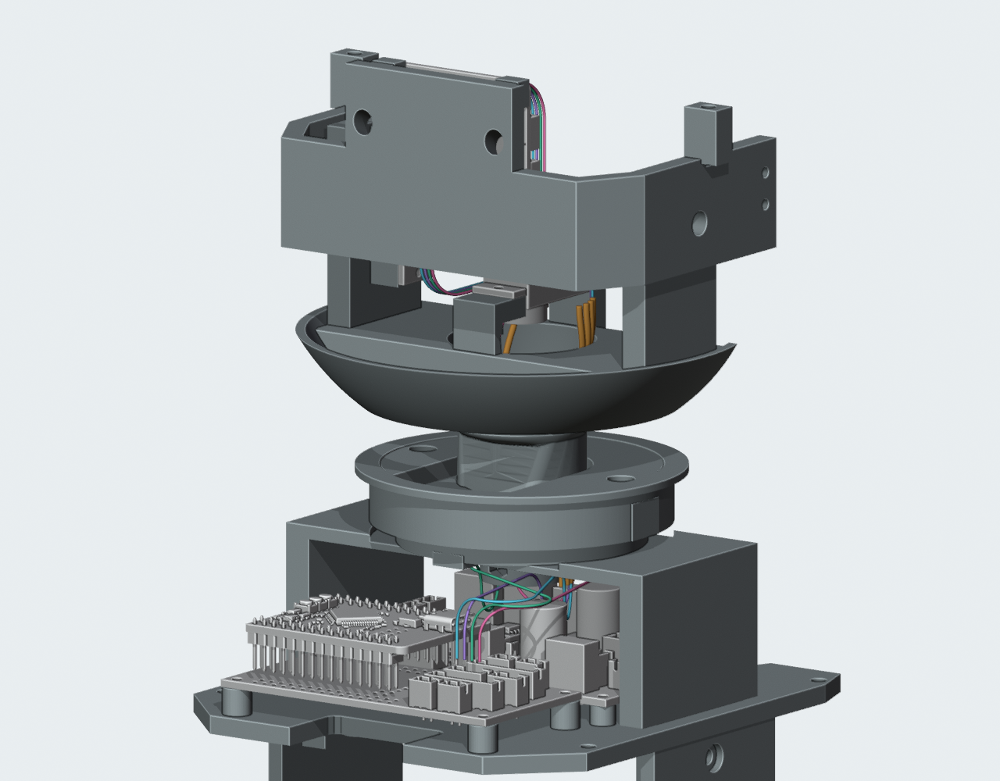
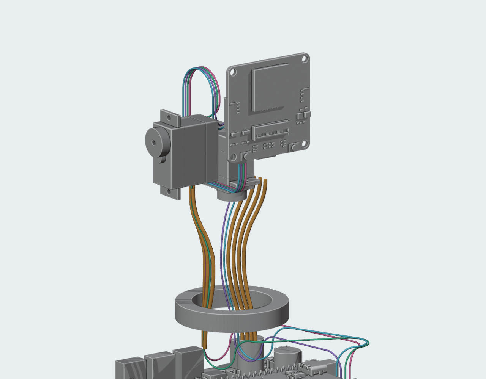
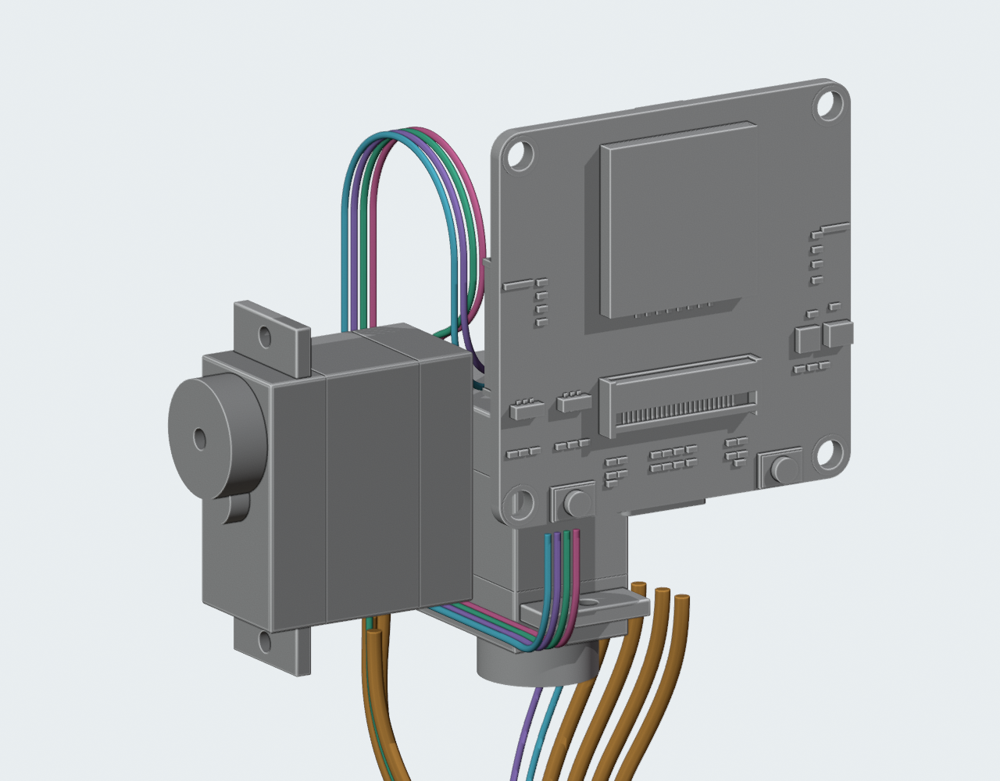

← 已应用的颈部结构CAM四根线的连续走线候选
2026-10-05T18:21:38.757451+00:00
有限姿态的数字检查通过，完整线束仍未完成。这里是独立候选预览；正式主模型、STL及装配视频保持已批准的M1.49结构。线束尚未采购或制造放行。
M1.49当前原件上，CAM四根线已从Motion J5贯通到CAM J11的估计出线点，保持逻辑1→1至4→4；130个组合姿态的实体、线间及自身接近检查通过。为避开俯仰舵机，调整了三条局部路线的相位和一根身体段，并错开头部最后转弯的位置。所有打印件及硬件位置保持。该线束仍是独立候选，未加入主模型。固定与应力释放、另外七根导线的完整两端、FFC/FPC、带线装配和供应商制作图尚未完成。

当前框架内的零位候选。四种颜色用于区分机械路径，不代表真实电气线色。橙色七根仍是颈部局部容量样线。
隐藏部分框架、外壳与光学件展示路线；数字检查仍包含这些零件。CAM端的实际胶壳、压接位置及公差尚未确认。头部俯仰余线

四根线连续绕过舵机，进入CAM板估计出线点。图中空中的余线是待固定的曲线候选；不表示实物导线能自行保持形状，也不表示固定座已完成。已完成的数字检查
| 范围 | 结果 |
|---|
| 当前实体与接口基准 | 按当前209个原件、29个对插包络及14条已有静态线候选检查；未替换打印实体。隐藏检查模型的变换已在读取前更新。 |
| 身体段与颈部 | 已更新的11条路线通过当前实体与姿态复核、715组线间检查；四根CAM线下段连续。 |
| 俯仰段与下段 | 5720组上下段线间检查、60组上段互检通过，40组上段自身接近检查通过。 |
| 四根新连接段组合 | 选中的每段通过实体、自身接近、其他上下段及连接段之间的检查；13个偏航×10个俯仰姿态共520条连续CAM曲线，接缝误差小于0.00001mm。该数值是计算误差，不是制造公差。 |
| 弯曲与运动 | 新增身体/头部圆弧名义半径不小于7mm；颈部沿已检查的等长曲线族。实体检查为有限姿态采样，未验证实际动态弯折、回弹、摩擦或寿命。 |
| 线材与端口证据 | CAM路线使用Ø0.6604mm候选；另外七根Ø1.4224mm仅作容量规划。身体针位来自原生PCB，CAM出线点含照片估计，端子和成品线仍需确认。 |
中心线路径长度
只记录当前数学路径。端子、压接、剥线、应力释放及装配余量尚未冻结，不能用下表向供应商下单。
| 逻辑连接 | 当前中心线 | 用途限制 |
|---|
| J5-1 → J11-1 | 约 319.9 mm | 不是裁线尺寸 |
| J5-2 → J11-2 | 约 295.2 mm | 不是裁线尺寸 |
| J5-3 → J11-3 | 约 315.3 mm | 不是裁线尺寸 |
| J5-4 → J11-4 | 约 318.4 mm | 不是裁线尺寸 |
仍需完成
- 身体、偏航及俯仰两侧的线束固定和应力释放；任何结构变化先提供候选确认。
- 其他七根线的两端连接，以及屏幕FFC、相机FPC。
- 端子穿入、插接和整机带线装配顺序。
- 实际线材、胶壳/压接尺寸及供货图纸，随后再做实物装配和运动验证。
独立Blender候选 · 完整CAM组合检查 · 新的身体/颈部排布 · 上下段线间检查 · 运行记录 · 此前身体至颈部阶段
主模型SHA256：89cb07f571367bf87b627c771998d0cc0c28b873be575afdb4002c9bcf5b499f。CAD / PROTOTYPE / UNVALIDATED。